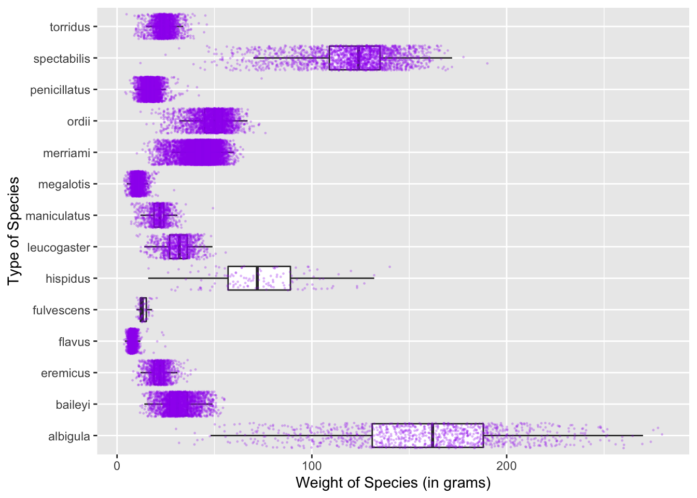
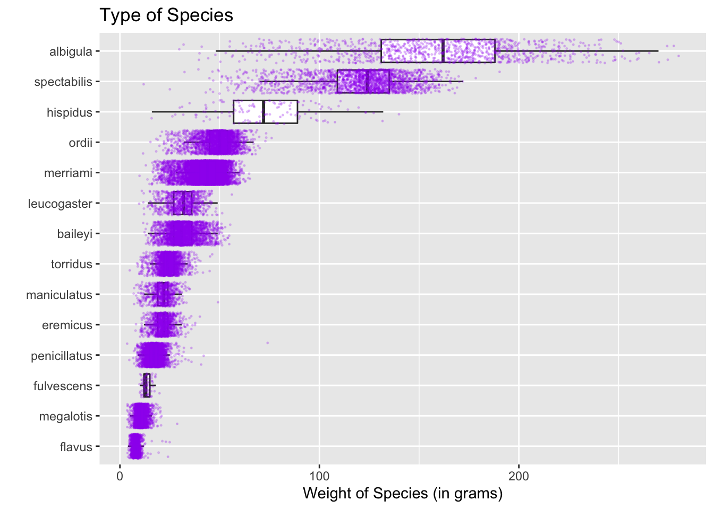
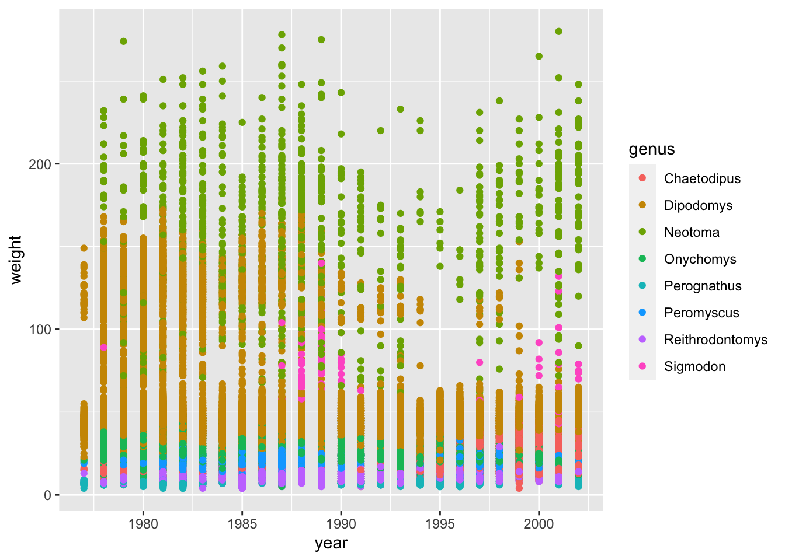
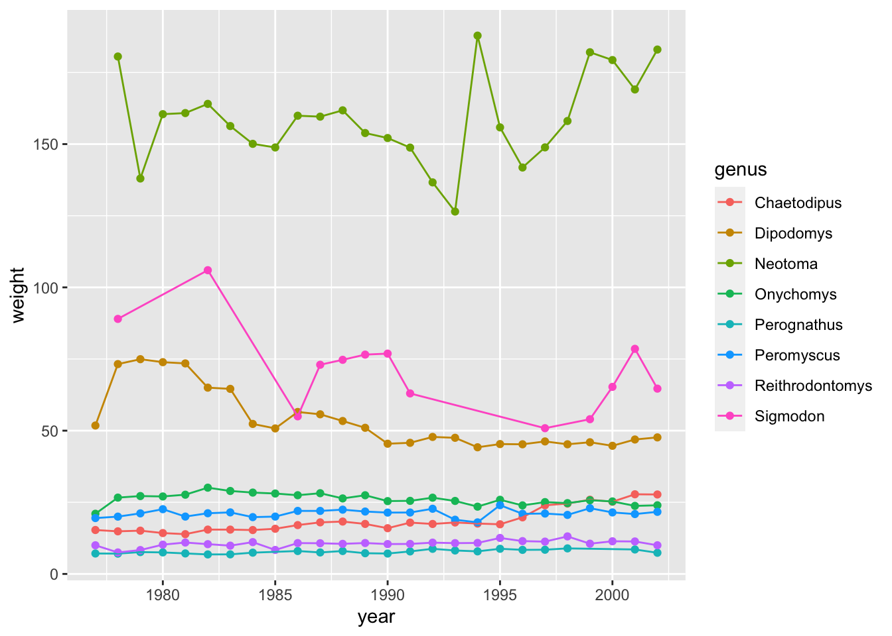
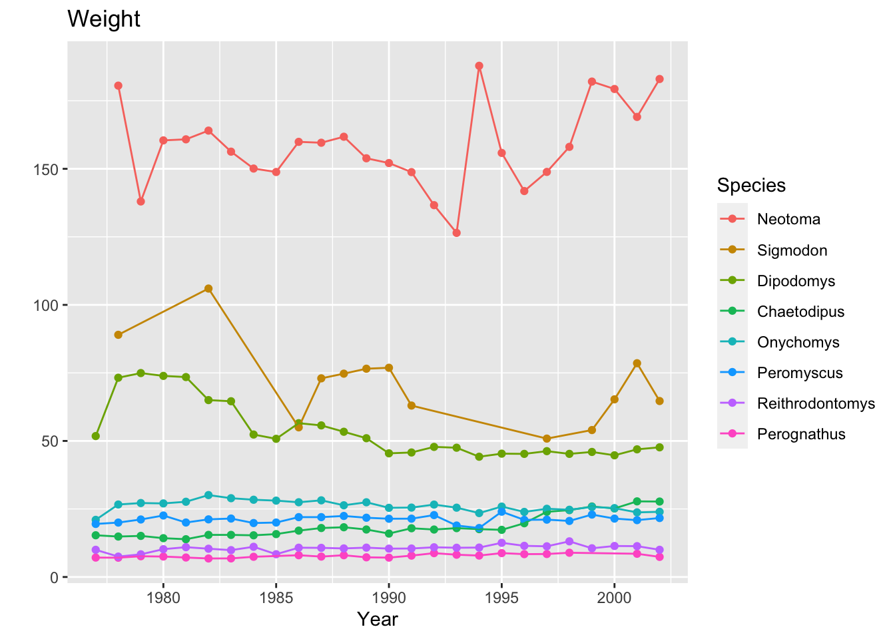
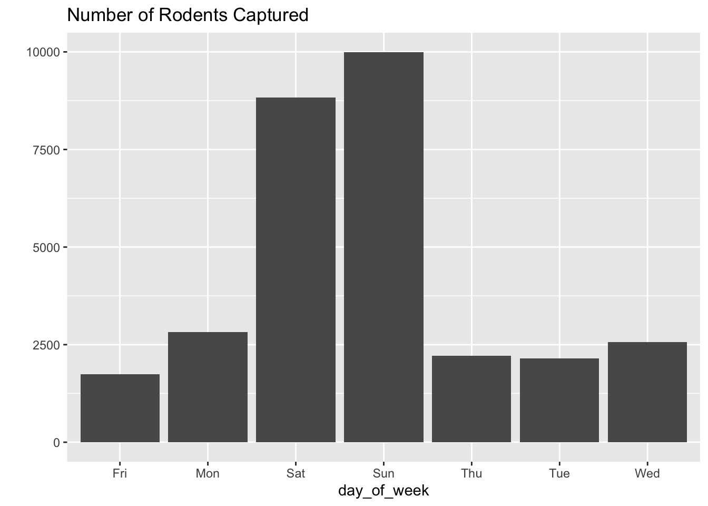
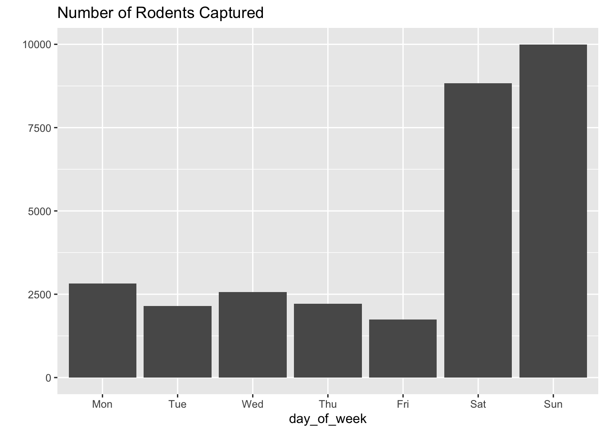
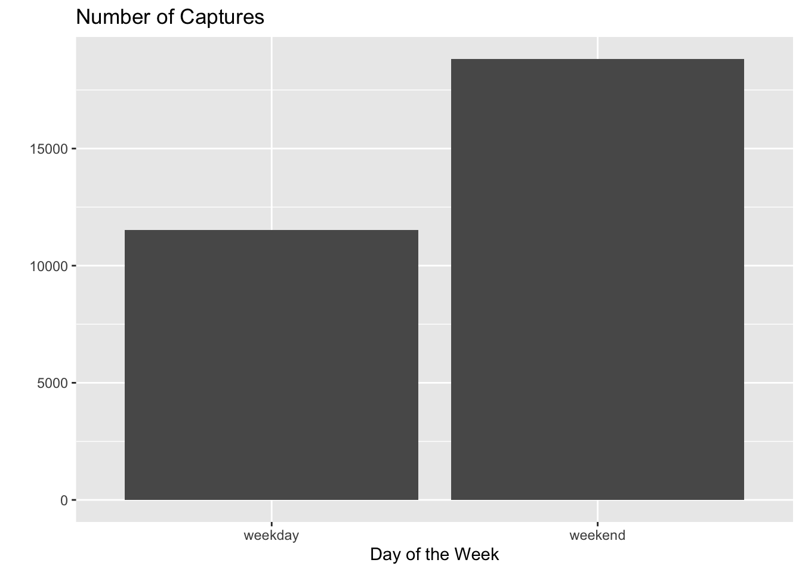

library(tidyverse)Lab 5: Factors in Visualizations
surveys <- read_csv(here::here("supporting_artifacts",
"learning_targets",
"Lab5",
"surveys.csv")) ggplot(data = surveys,
mapping = aes(x = weight,
y = species)
) +
geom_boxplot(outlier.shape = NA) +
geom_jitter(size = .25,
color = "Purple",
alpha = .20) +
xlab("Weight of Species (in grams)") +
ylab("Type of Species")
Question 1 + 2
Reorder the box plots so the weights go in descending order.
Moving the Y-axis to the top of the plot.
surveys <- surveys |>
mutate(
species = fct_reorder(species,
weight,
.desc = FALSE)
)
ggplot(data = surveys,
mapping = aes(x = weight,
y = species)
) +
geom_boxplot(outlier.shape = NA) +
geom_jitter(size = .25,
color = "Purple",
alpha = .20) +
labs(x = "Weight of Species (in grams)",
y = "") +
ggtitle("Type of Species")
Part 2: Time Series Plot
Question 1
Weights over time from original surveys data
ggplot(data = surveys,
mapping = aes(x = year,
y = weight,
color = genus)) +
geom_point()
Question 2
Mean weights by year and genus over time
weightavg <- surveys |>
group_by(genus, year) |>
summarize(across(.cols = weight,
mean,
na.rm = TRUE),
.groups = "keep"
)
ggplot(data = weightavg,
mapping = aes(x = year,
y = weight,
color = genus)) +
geom_point() +
geom_line()
Question 3 + 4
Reorder by weight and rename legend title and move legend info to plot title
weightavg <- surveys |>
group_by(genus, year) |>
summarize(across(.cols = weight,
mean,
na.rm = TRUE),
.groups = "keep"
)
ggplot(data = weightavg,
mapping = aes(x = year,
y = weight,
color = fct_reorder2(genus,
year,
weight,
.desc = TRUE))) +
geom_point() +
geom_line() +
labs(x = "Year",
y = "",
color = "Species") +
ggtitle("Weight")
Part 3: Captures Over the Week
Question 1
Rodents captured each day of the week
surveys <- surveys |>
filter(
day_of_week != is.na(day_of_week)
)
ggplot(data = surveys,
mapping = aes(x = day_of_week)) +
geom_bar() +
labs(y = "") +
ggtitle("Number of Rodents Captured")
Question 2
change order of day of week to Mon-Sun
surveys <- surveys|>
mutate(
day_of_week = fct_relevel(day_of_week,
levels = c("Mon",
"Tue",
"Wed",
"Thu",
"Fri",
"Sat",
"Sun"))
)Warning: Outer names are only allowed for unnamed scalar atomic inputsggplot(data = surveys,
mapping = aes(x = day_of_week)) +
geom_bar() +
labs(y = "") +
ggtitle("Number of Rodents Captured")
Question 3
Create weekday and weekend levels
week <- surveys |>
mutate(
weekday = fct_collapse(day_of_week,
weekend = c("Sat", "Sun"),
weekday = c("Mon",
"Tue",
"Wed",
"Thu",
"Fri"))
)
ggplot(data = week,
mapping = aes(x = weekday)) +
geom_bar() +
labs(x = "Day of the Week",
y = "") +
ggtitle("Number of Captures")